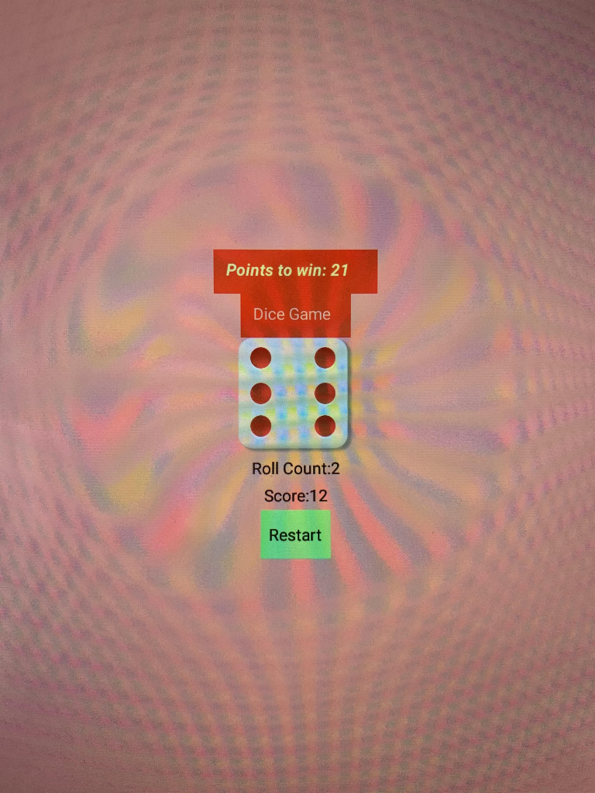
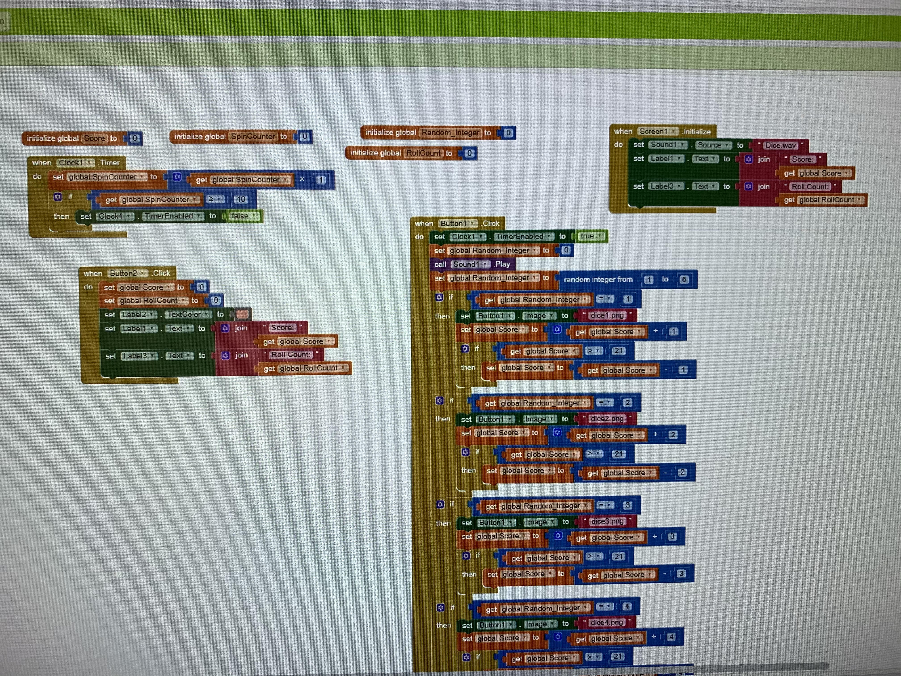
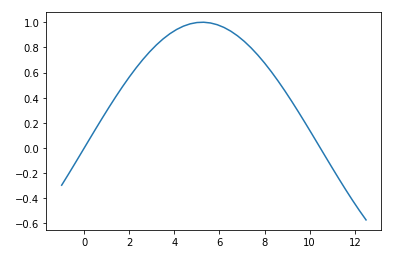

Portfolio

Ryan and I created our first scratch game. Dont Let D money catch the ball. Try and keep the ball up as long as possible. More D monies will spawn randomly acorss the court, you can't let any of his clones touch the ball either. You can also press the keys displayed in game for different difficulties.
This is "the Dice Game", the best dice game ever made. We used MIT App inventor to create a dice game. You have to try and roll 21 in the least amount of rolls. Whoever rolls the least amount of times and gets 21 wins!


I created my first python game with Nick. It is a yes or no story with many decisions to make. It involves a crazy party and many paths to make. I had a little difficulty at the start when creating this project but was able to overcome and power through. This is my favorite project so far. We used python 2.7 to create our story.
I created this simulation using Net Logo 6.1.1. I wanted to make something simple because it was my first simulation. I made a simulation that starts with 6 arrows in the middle. Using code that randomizes movement I was able to have them wander around on screen. I have 2 buttons on the side, the start button clears the screen and starts the program, and the move button allows the arrows to move randomly infinitely. Make sure to set the ticks to slower because if not they move too rapidly.

This graph I made using python shows the average temperature difference in San Deigo in degrees Celsius throughout the months. It was a challenge to find the data and put it into the graph. The first month representing January and month number 12 representing December. You can see how throughout the months it changes only a little because we live in a pretty stable climate. In the first and last months though its average is lower. In the middle months the average temperature increases.
